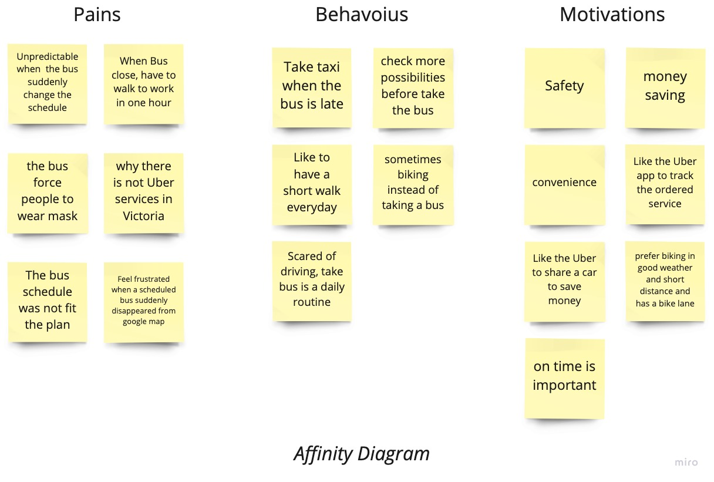
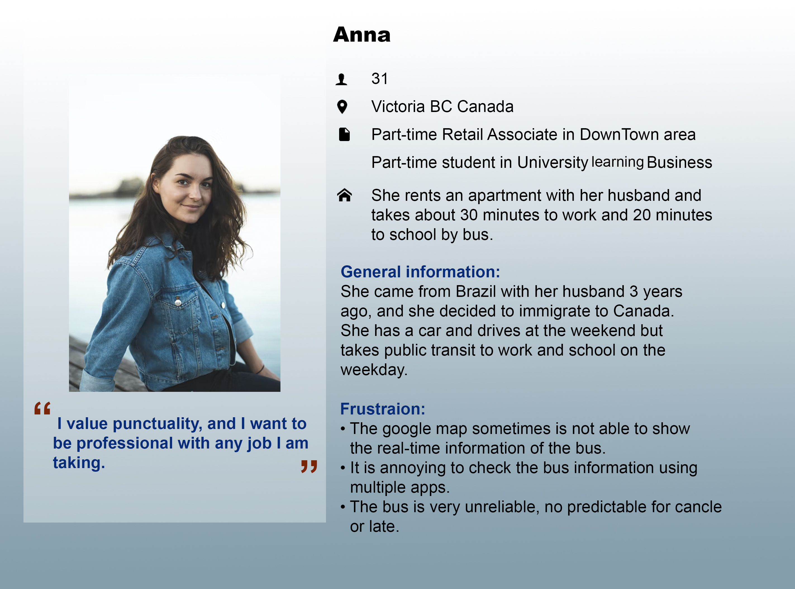
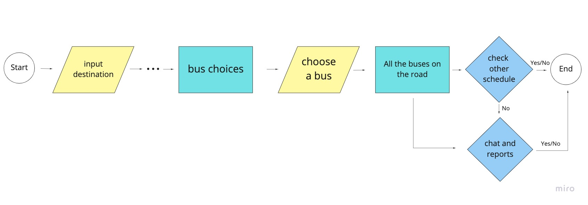
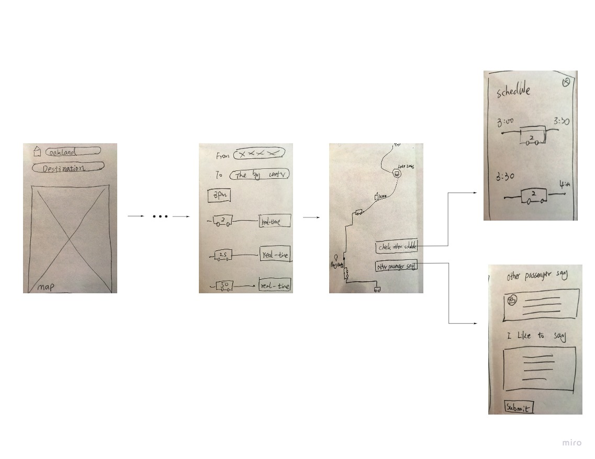
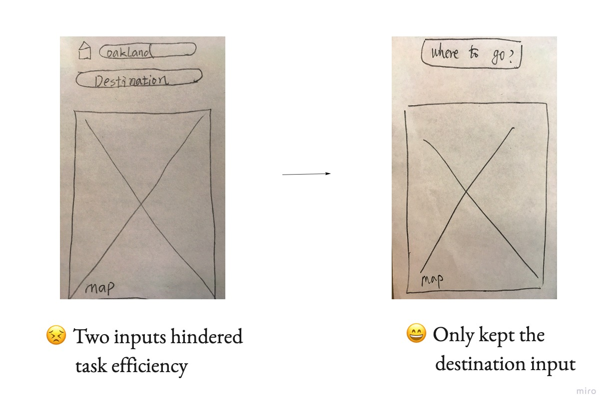
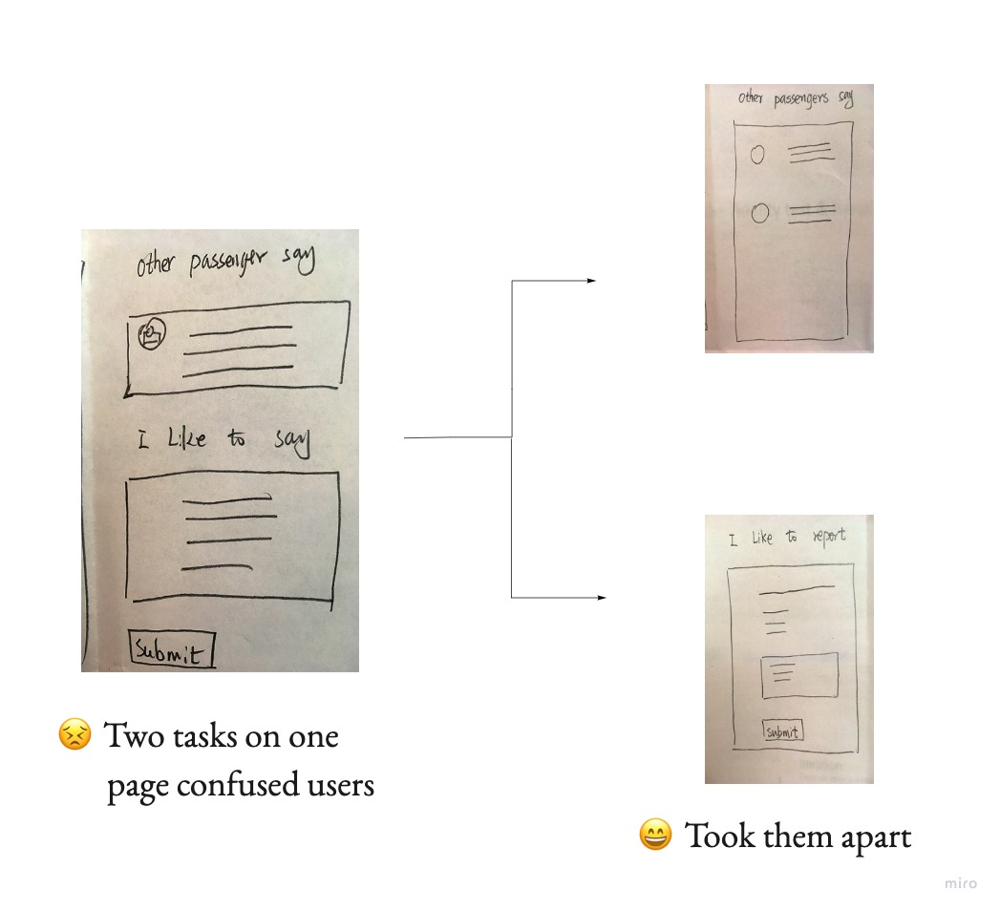
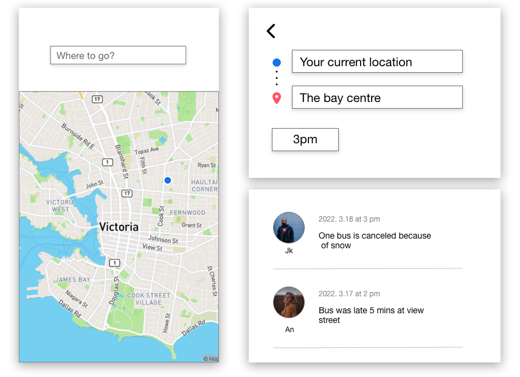

Background
After the severe pandemic, people started to back their everyday life, but something changed, including taking buses.
Victoria, BC is a city with prosperous service industries where many service workers go to work and take buses every weekday, so checking daily bus information becomes their habit.
My goals
Start
Talk about your stories
I was lucky to have an in-person job when I was wroking on the project , so I grabbed my five co-workers to ask about their experience of taking a bus. The form of the interview was casual, but I tried to collect information as much as possible.
Make a user need statement
How might we provide more information for users who need to come across the issue that the bus schedule is not accurate?
Who are we designing for?
My elevator pitch
My app is like Google Map, BC Transit, Waze but is specific for users who take a bus daily, which helps them get more accurate bus information and feel less frustrated.
Visualize my user's goal
Challenges
Sketch
The most important flow
The user flow was based on the unique functionalities that allow users to track the bus after choosing one particular plan and chat with other users to collect more bus information.
 Test at the very early stage
I got free testing from my co-works (casual but better for nothing)
 Meduim Fidelity
Let's go a little bit real
Testing...testing
Small changes make big different
High Fidelity
It's usable and cute
Style tile

Final thought
The design of the bus app was a journey from a brief concept to delivering a valuable product.
There were lots of iterations. I iterated the original problem statement. Also I iterated the previous design based on heuristic analysis before testing. However, I still regret that I should ask more why and how questions during the interview because more information could challenge and tested my assumption more effectively.
In the high-fidelity phase, I tried to find a balance between clearing the page noise and applying my idea of using watercolor and paper texture. I minimized my design and made meaning for every button, icon, and line rather than decoration. I hope the design make users feel that taking bus is not dull; it could be fun.